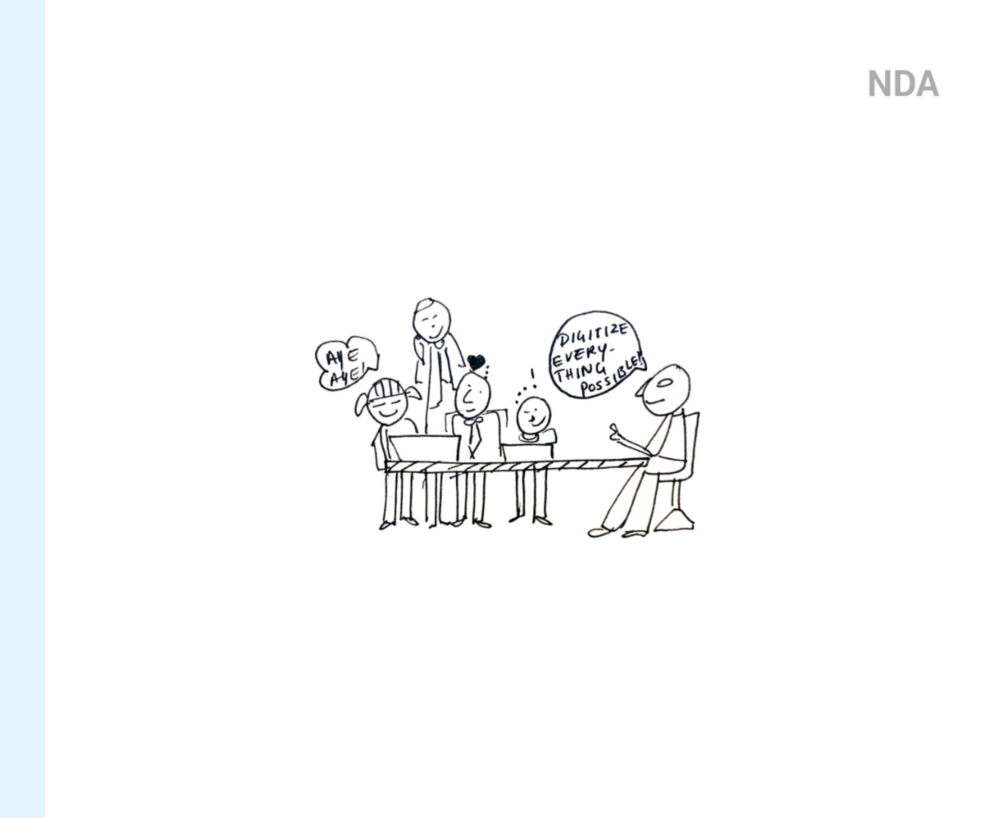
Over the last decade and a half, Truenorth has invested in over 35 mid-sized profitable businesses, 13 of which it has since exited — transforming them into industry leaders respected by peers and society at large.
To re-look at investment management as a service, and digitalise the entire system in order to reduce the time taken to crack a deal.
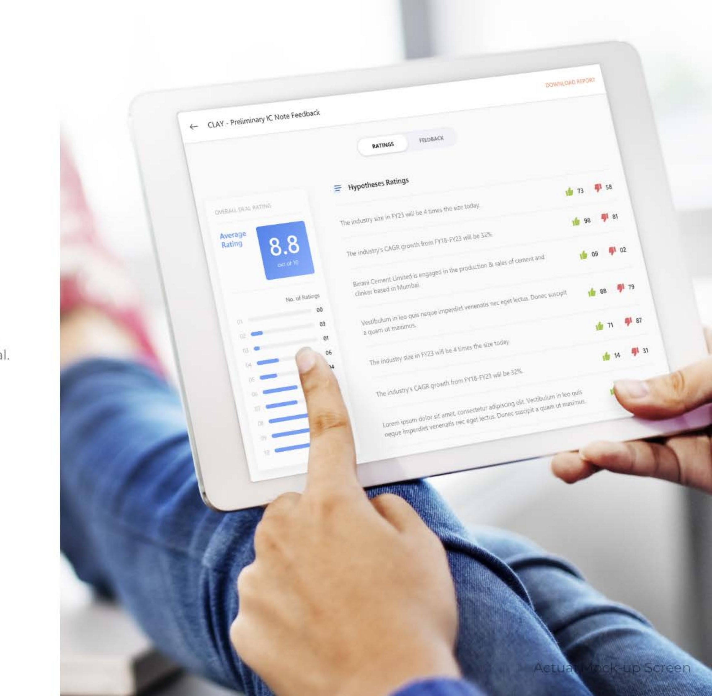
This was one project where we were completely submerged into the system, trying to get into the shoes of the employees and understand every nitty-gritty. As a result, it became one of my most fun projects — I got to explore the length and breadth of UX design, from user profiling and interviews through to workflows, content modelling, screen flows, concept sketching, wireframes, and visual design.
We conducted in-depth interviews to understand the jobs, pains, gains, goals and value propositions of every designation. We realised how the same task is looked at in a completely different light by different roles in the organisation — which helped us look at everything as a whole and fill in the missing pieces.
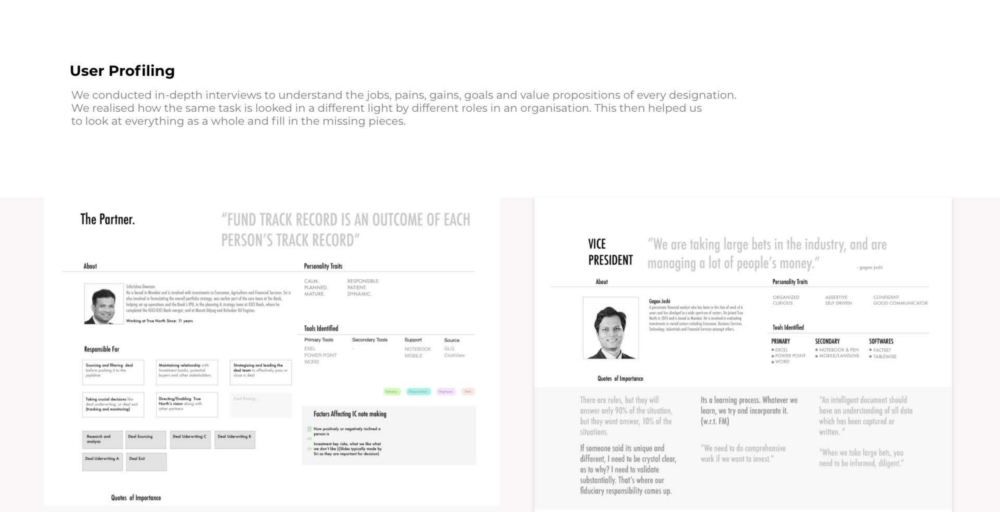
As we sat with the client day in and day out to hear about the kind of work they do, we did a lot of whiteboarding to put their words into visuals. Since every person had their own style of working, we wanted to build something that maintained that individuality while still bringing about a uniformity — a template everybody could follow.
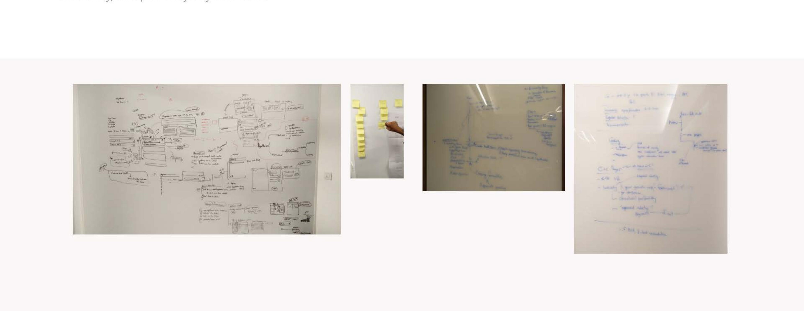
It took us 17 versions to arrive at a final process flow document — one that everyone agreed to. It marked all the important stages, documents and processes involved. Based on this, we started envisaging a platform that could, in the best possible way, do justice to this process.
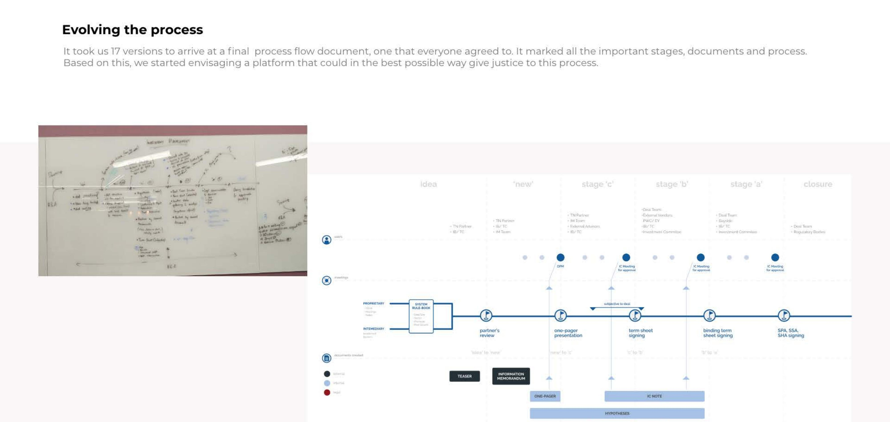
We delved deeper into the process by splitting it into parts and understanding each working method. While every person had their own way of working, what they essentially did all the time was plan, prepare, and present.
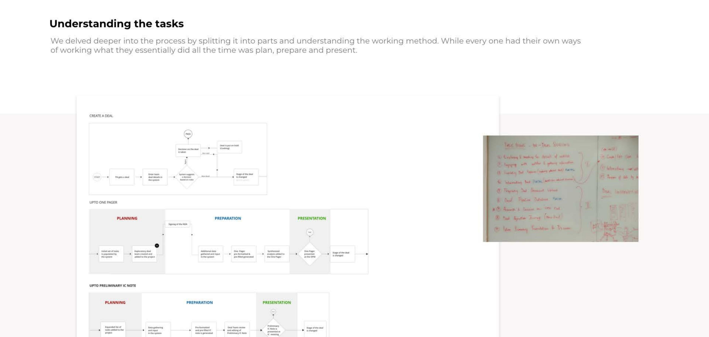
Despite limited time, we decided to understand the process completely by creating process flow documents and analysing the nature of content this system would hold. Although this took up some time initially, it really eased the process for us toward the end.
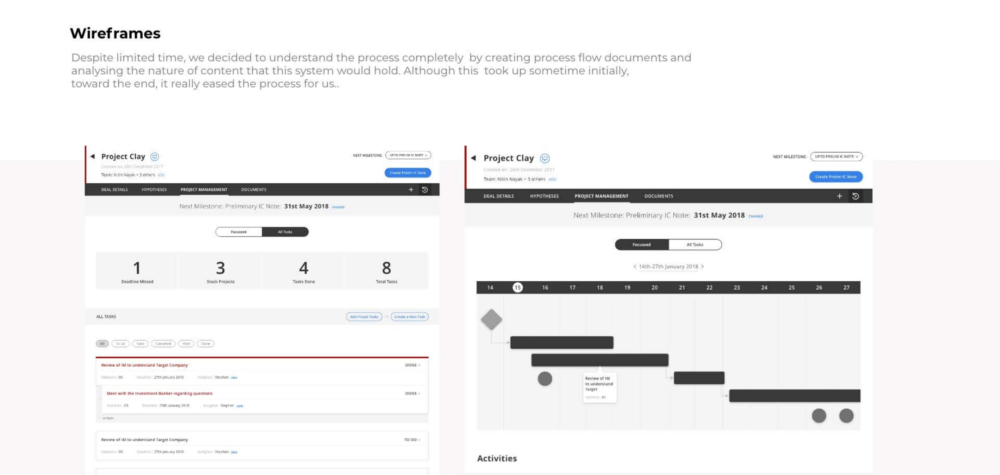
Simultaneously, we tried to understand what a "deal" is, in totality. The base model kept evolving each day, gradually giving us a model that had actually started taking shape.
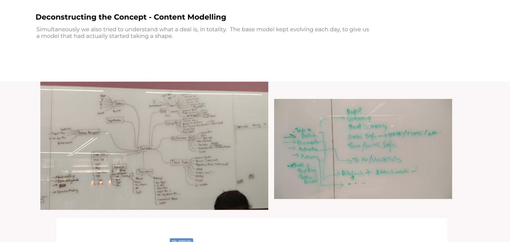
By this point we started discussing what the platform would actually contain and what it should look like — sketching several concepts and negating them one by one, until we reached the final direction.
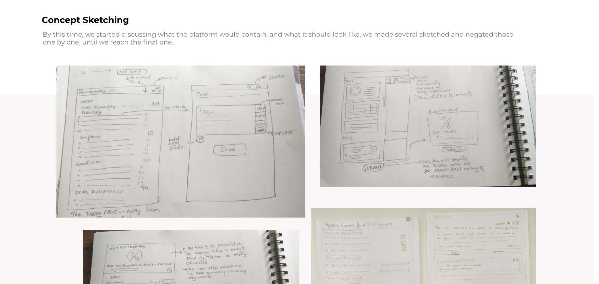
With the content model and concept sketched, we started building screen flows. The idea was to capture all content pieces in order of priority, along with contextual and page-level CTAs for every screen — and to understand how each screen connected to the next. This was a good move before starting the wires.
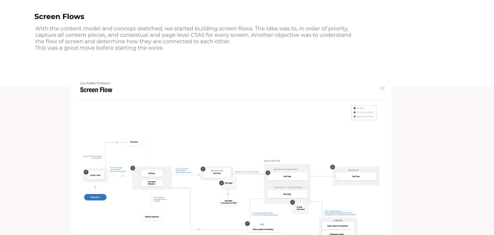
With the screen flows in hand, all we needed to do was focus on usability and create delightful, functional wireframes. The entire platform was divided into three major parts: deal detail, hypotheses, and task manager.
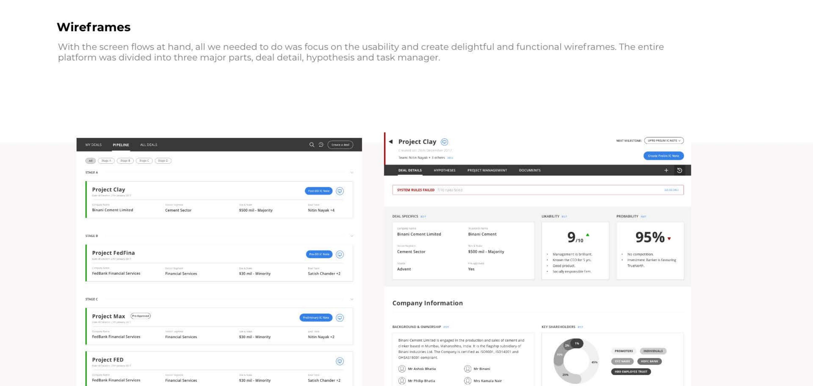
Every deal team works to prove or reject a set of hypothesis statements. We brought in some structure by introducing templates and fixed categories — industry, company, leadership, deal dynamics, and exit — to avoid digression.
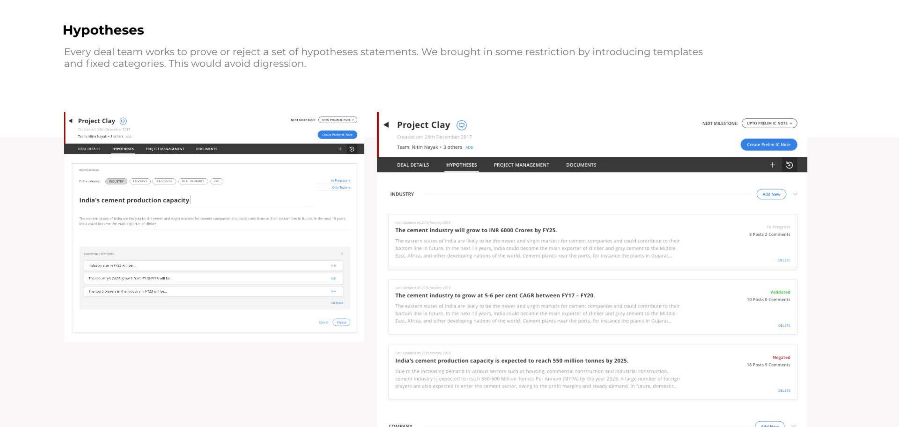
We created reports that assimilated all the gathered data. These reports were crucial — they became the base document on which decisions were taken on every deal.
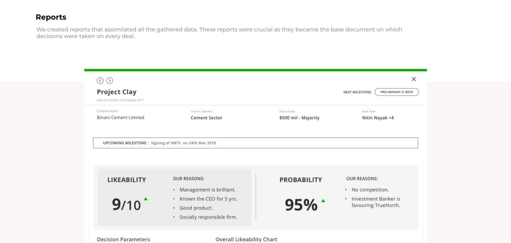
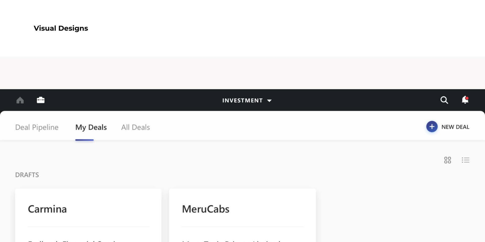
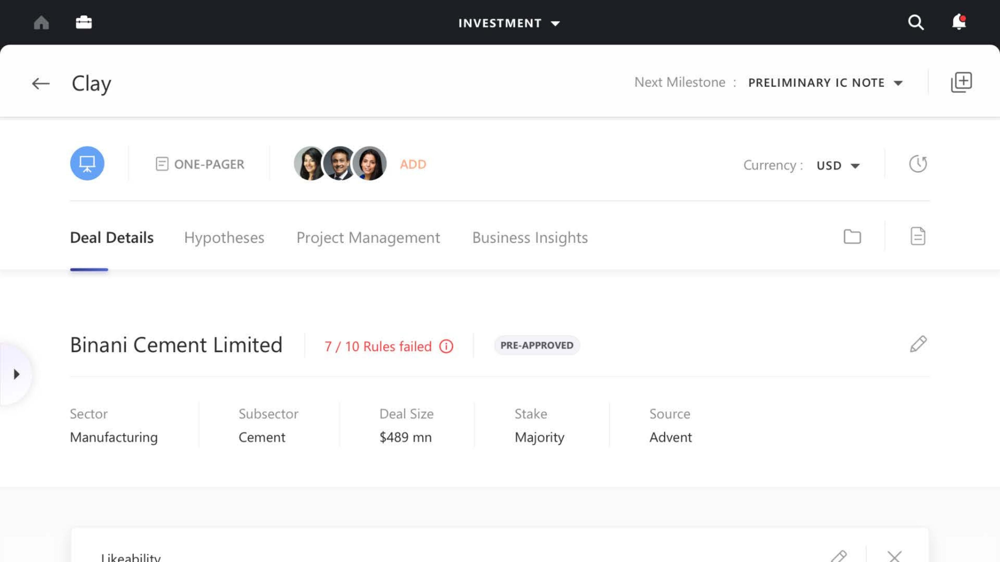
This was one project where we were completely submerged into the system, trying to get into the shoes of the employees and understand every nitty-gritty of how a deal actually gets made. Deconstructing something as abstract as "a deal" into a content model, then rebuilding it into a platform three different roles could each trust, was one of the most complete design problems I've worked through — and one of the most fun.